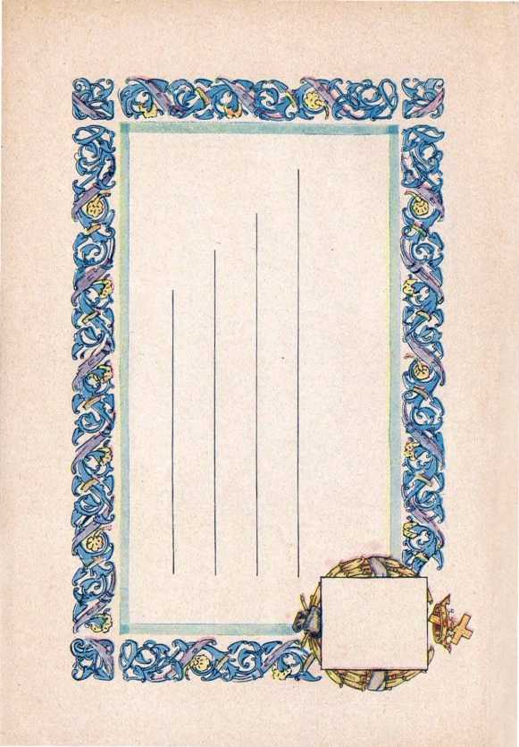

“"KELL us, ... what shall be the sign [proof] of thy coming and of the end of the world?" Deliverance, page 237.
The answer could not be fully understood or appreciated until the time for its fulfilment. Deliverance, page 237.
Never before was there a war like the one from 1914 to 1918. Deliverance, page 238.
On November 11, 1918, the war suddenly came to an end. The real reason is clearly indicated by the Scriptures.
Deliverance, page 240.
FATHER further testimony was given by Jesus: "And Jerusalem shall be trodden down of the Gentiles, until the times of the Gentiles be fulfilled."—Luke 21:24. Deliverance, page 241.
There has been a gradual and healthy increase of the population of Jews in Palestine.
Deliverance, page 241.
The Devil's empire has come to its end; he knows that his time is short and he is therefore desperately seeking to rally his forces for a great and final con-
Deliverance, page 249.
flict.
But why should there come a great trouble on earth more terrible than man has ever before known? Deliverance, page 257.

w A /Md
INSTEAD of heeding 1 the words of the Lord and telling the people that his kingdom is their hope, ecclesiastics unite with profiteers and professional politicians and declare that such a League of Nations is “the political expression of God’s kingdom on earth”.
Deliverance, page 260.
Others claim to believe that there is a Devil, an invisible imp who goes about to amuse himself with petty wickedness.
Deliverance, page 265.

Deliverance, page 284
1 God were granted visions of the preparation for the great battle. Deliverance, page 276.
Next Reading Assignment!
1 Pages 235 to
' Following Week «
1 ' Pages 255 to 289
Let no one deceive himself into thinking that the battle of Armageddon is a mere fight between men, or that it is only a picture.
Deliverance, page 282.
The great and terrible day of God Almighty, the battle of Armageddon, will be marked with such a decisive victory for righteousness that all will know it.
